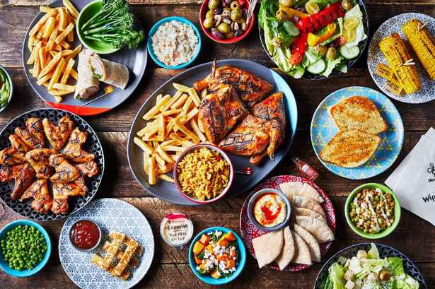

French Region And Regional Culture
Next
Voici un aperçu de la manière dont les langues régionales
sont soutenues et de la manière dont le contenu français est
délégué dans ce contexte : Diversité et reconnaissance des
langues régionales en France : La France abrite de
nombreuses langues régionales, dont l'occitan, le breton,
l'alsacien, le corse et le catalan. Ces langues sont
officiellement reconnues et contribuent au riche patrimoine
culturel du pays.
Importance culturelle : Les langues régionales font partie
intégrante des identités et des pratiques culturelles
locales. Elles sont utilisées dans les médias, la
littérature et les événements culturels afin de préserver et
de promouvoir le patrimoine régional. Délégation aux
contenus français Délégation générale à la langue française
et aux langues de France (DGLFLF) : Cet organisme, rattaché
au ministère de la Culture et de la Communication, supervise
la politique linguistique en France, notamment en matière de
langues françaises et régionales.
Next
Symboles Celtiques : La Croix Celtique La croix celtique bretonne
est un symbole puissant de l'identité bretonne et de l'héritage
celtique.Cette influence continue de renforcer l'identité
régionale unique de la Bretagne tout en célébrant ses racines
celtiques.
Next
Festivals and traditions
La France est réputée pour ses fêtes et traditions vibrantes,
profondément ancrées dans ses cultures régionales. En voici
quelques exemples clés: Carnaval de Nice. Importance historique:
Né en 1294, le Carnaval de Nice est l'un des plus anciens et des
plus célèbres festivals de France. Initialement une célébration
précédant le Carême, il est devenu un grand événement civique au
XIXe siècle.
Next
Cuisine and Gastronomy: Regional Culinary Diversity in France
La gastronomie française est célébrée dans le monde entier pour sa
richesse, sa diversité et son importance culturelle. Chaque région de
France possède des traditions et des spécialités culinaires uniques,
reflet de ses ingrédients locaux, de ses influences historiques et de
sa fierté régionale. Voici un aperçu de quelques régions remarquables
et de leurs plats emblématiques: Bourgogne Spécialités: Coq au vin
(poulet mijoté au vin rouge), bœuf bourguignon (bœuf cuit au vin) et
escargots à la Bourgogne (escargots au beurre à l'ail).

Gastro-Tourism: The Role of Food Tourism in Promoting French
Regional Culture
La France est un leader mondial du tourisme culinaire, son riche
patrimoine gastronomique attirant chaque année des millions de
gourmands. Le gastrotourisme met non seulement en valeur la
diversité des cuisines régionales françaises, mais constitue
également un moteur essentiel de l'économie locale et de la
préservation culturelle.